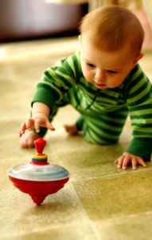
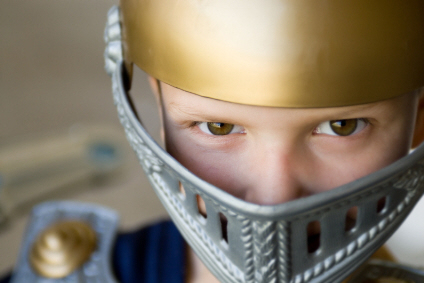
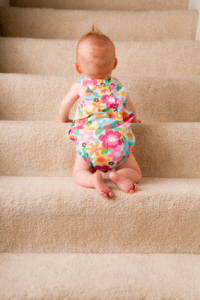

Top 10 Infant Learning Toys for Enhancing Motor Skills
When it comes to finding good infant learning toys, French flashcards and other typical brainiac junk is NOT what you should be looking for. (Unless, of course, you're French...)

Just look at Einstein! Using both
fine AND gross motor skills!
The best toys to push those synapses to fire will be those that focus on motor skills of the non-auto variety.
I'm talking about gross motor skills that enable your baby to learn to crawl and walk, and fine motor skills that allow your infant to pick up that spoon and throw some oatmeal around.
Those are the skills to hone in on.
And to help with the "honing", I've listed the top 10 infant learning toys for doing just those things.
Five for building balance and large muscle coordination, and five to help turn chubby finger digits into functional pincer grasps.

Time for Some Age Discrimination!
In order to achieve our goal of highlighting infant learning toys that address motor skills, I've chosen to practice some ageism.
These toys are mostly oriented towards infants who are in the 9 month and up age range. Milestone-wise, this is the group who are focused on the skills I'm discussing (balance and walking and using the pincer grasp.)
If your baby is younger than 9 months, I've written other articles to discuss how to choose infant learning toys for those ages that will give you the most brain for your buck.
They are...
Infant Learning Toys Designed for Newborns Under 3-Months
The Secret to Finding Great Toys for Sitters ages 3-6 Months
How to Make Educational Toys Fun for Crawlers 6-9 Months Old
Your Top 10 Motor Skill Infant Learning Toys
I know what you're wondering.
Did I order these according to awesomeness?
No. I ordered them according to randomness.
I had my list of award-winners and parent emails, and I (very scientifically) closed my eyes and threw down a manicured finger to see what I should list next.
So don't email me all mad because I listed little Tommy's favorite train as #3. Take it up with the manicured finger.
#1) Walking in Circles
What's the safest way to let your baby practice her gross motor skills (aka walking skills)?
Have her walk in circles!
This amazing design won a "Best Product" award by Dr. Toy himself in 2008, and was announced as the Toy of the Year in 2010 by Creative Child Magazine.
Once your baby has mastered The Circle, you can upgrade him by taking off the seat entirely, leaving the center as an solitary island of exploration.
#2) Zoom-Zoom Dragon
I have three daughters, no sons.
But sometimes I daydream about what my life would be (will be?) like if a little Cameron Jr. entered my world.
 Every knight needs a dragon.
And in that vision, I see my Camby boy (with his VERY mischief smile) terrorizing his sisters on the back of this little zoom-zoom dragon (they call it a dinosaur, but I think it looks like a dragon) waving a plastic sword and sending them all squealing for the couch.
(Then I see him break a lamp, split a lip, and suddenly everyone's screaming and I'm contemplating sending Camby outside to run laps around the yard in hopeless attempt to drain away his endless energy...)
The dinosaur DRAGON is a two-for-one skill success. The wheels slide together to make a seat unsteady-wobblers can sit on and push around, or it opens
to practice their walking (running?) skills.
It was chosen as a 2010 Best Toy by Parenting and a "Holiday Hot Tot Toy" by Toys "R" Us.
And since they ARE toys (so they claim but I only see a big square building and I don't think a building is a toy, unless it's the house from Swiss Family Robinson...) I guess they know what they're talking about, right?
#3) (Not So) High-Speed Train
This little train is a goldmine of motor skill activities. Putting things in, taking things out, pushing buttons, flipping pages...not to mention riding and pushing.
Also a bonus is that this toy engages 3-year-olds and 1-year-olds alike. It's not something she'll quickly outgrow.
Every square inch of this sit-and-stand train is covered with things to explore. It plays some pretty darn catchy tunes and teaches letter recognition for the brainiac babies among us.
#4) Smarty-Pants Legos
Lego-lovers still in infancy, rejoice! This lego set is the perfect (safe) size for chubby baby fingers.
He can stack them to match numbers with pictures, to create a house, or (more likely) build towers to destroy again and again.
This particular Legomaniac version was given the 2010 iParenting Media Award and Best Toy of 2010 by Parenting.
#5) Wooden Family of Stackers
There are three pillars on this brightly painted beech-wood pull toy.
Your baby gets to stack the pieces onto the pillars to create three different clowns made of wood and fabric to sit on the "stage".
When she's done, she can pull the toy all around the room like a circus parade.
Bella, at 19 months, is REALLY into the whole pull-toy-thing right now. She thinks it's hilarious to be "followed" everywhere.
#6)The Pyramid of Play
If there's one thing I've learned in my 8+ years of motherhood, there are few things in life as fun to a growing infant/toddler than destroying something.
The pyramid of play provides such an opportunity.
Made of durable light-weight wood, and painted with bright colors, your infant will squeal with excitement to build and tear down tower after tower.
Each box also has a cut-out shape with corresponding wooden inserts so your baby can practice sorting skills at the same time. When finished, teach him to reverse stack them into a nice-and-neat little box for storage.
#7) Double Rainbow...So Intense
For those of you how don't understand my "Double Rainbow So Intense" reference, here's the hilarious-yet-freaky YouTube you'll need to watch to catch up with the rest of the class.
This VERY INTENSE stacking game is on the top list for several reasons. First (and FOREMOST), it's pretty and I'm a sucka for pretty things.
Secondly, it's great practice for your infant to pick up items of different shapes and control the hand long enough to stack them on the poles.
It's also extremely easy to up-the-intensity (if you can handle it, that is), by naming all the colors as your baby practices putting them on the posts.
#8) Alex in WonderWorld
This urban themed bead maze is chock-full of opportunities for fine motor skill practice. It also teaches organization of objects and cycle of movement.
Your emerging Einstein maneuvers a train, car, helicopter, and airplane through the air and under a wooden platform on bead-tubes.
It's pretty enough (wood and lacquer) to have sitting out in the living room, which I especially like. It's gorgeous and smart. Go figure...
#9) Obstacle Course at Home
An at-home obstacle course is a graduate course in climbing, crawling, and sliding and is perhaps my favorite of the infant learning toys (if you can afford it).

Take the time to teach your baby
to do steps correctly.
It's an indoor gym you don't have to freak out about, since it's all soft corners and disinfect-happy fabric.
There's a mysterious tunnel, and slippery slide, and 3-steps to practice going up and down.
Having a staircase in my house I can attest to the powerful draw staircases can have on exploring babies.
Several times I would turn my head, only to turn back and see her lunging for the first step. (Thanks to her older sisters who struggled to remember to CLOSE THE GATE!).
I hold a "Stair Masters Level Course" for my babies as soon as they start crawling.
This jungle gym would be a great help in teaching those climbing lessons on soft steps.
Especially if you don't have stairs (but Grandma does!), or if your stairs are wooden.
#10) Heigh-Ho Silver!
I am a rocker. As in chair, not punk.
I rock when I'm reading, watching TV, even when standing. (My sister tells me I make her dizzy.)
My kids have adopted the trait as well. I'd like to claim that our "rocking" gives us all superior balance, but the lab results haven't come back yet. (I'll keep you posted.)
Pass "superior balance" on through your family tree by picking up a rocking chair for your pint-sized cowboy. (Oh yeah, they're fun too.)
If you do, get one with safety side bars to keep him on the chair, and not spilling head-first onto the floor.
All These Infant Learning Toys Come Down To...
...learning to walk and learning to grasp things.
The best infant learning toys for babies over 9 months will concentrate on those skills.
These are just 10 of the most commonly recommended infant learning toys, I'm confident you can go out and hunt up your own top ten. When you do, drop me an email and let me know which ones I missed!
happy hunting!

Is Your Baby Younger than 9 Months?
Infant Learning Toys Designed for Newborns Under 3 Months
The Secret to Finding Great Toys for Sitters ages 3-6 Months
How to Make Educational Toys Fun for Crawlers 6-9 Months Old


 7 Ways to Determine an Ear Infection
7 Ways to Determine an Ear Infection
 5 Tips to Fight the Cold Crusties
5 Tips to Fight the Cold Crusties
 Free $32 Nursing Cover with code ONEFREE!
Free $32 Nursing Cover with code ONEFREE!

 Does a Belly Binder help C-Section Recovery?
Does a Belly Binder help C-Section Recovery?
 This Month's Coupon Codes for Gap, Children's Place, and Others
This Month's Coupon Codes for Gap, Children's Place, and Others

I just subscribed to the site, and I'm very happy I did. I have worked in the medical field for several years and love to have good resources for when things come up...
~ Crystal S.
What a great site and thanks for having it available!
~ Bernadette W.
I'm very excited to start receiving the newsletter. I've checked out your site a couple times and I loooovve how it's arranged, your language, and tips - it's great!
~ Emily N.
Heather, I can't express how happy I am I discovered your site!
~ Liza T.
Thank you Heather, for your wonderful newsletter. There is always something new!
~ Desiree T.
I'm a 1st time young mom, 23 and single, so I have found very very helpful...I can't seem to stop myself telling everyone I know about you, some thought you were my mom!
~ Vuyiswa N.
Your website is very helpful and I discovered a couple of great online stores. 'Cause I'm not a big reader, it is very nice that I can find the most important information through your
website.
~ Tonya G.
Thanks Heather! Your Milestone eBook is SO detailed and so correct. My son is doing all or most of the things and many are not mentioned in the usual books/sites. Great job and keep it up!
~ Anwesha C.
Thanks so much for creating such an AWESOME website. I really appreciate your sense of humor and real writing style.
~ Andrea Z.
My baby refused all bottles until you showed me the MAM bottle. Thank you so much for the recommendation. I wouldn't have known about them if not for your website.
~ Jennifer at Sweet Lilly Confections


Copyright © 2007-2011. All rights reserved.
Remember...when in doubt, give Doc a shout!
New! Comments
Have your say about what you just read! Leave me a comment in the box below.